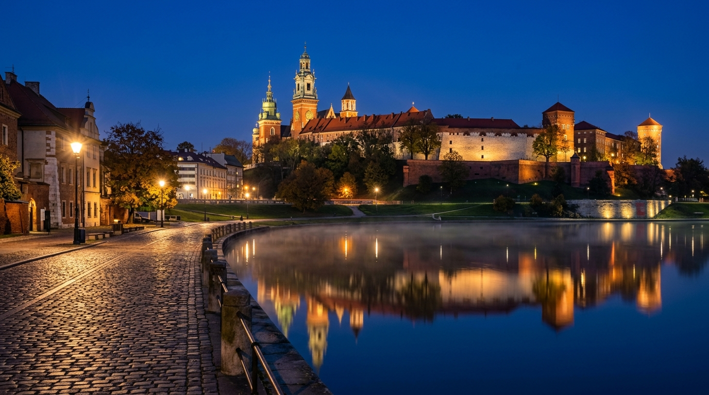

🇵🇱
MBBS in Poland
Most Popular Destination for Indian & Pakistani Students · 13 NMC-Approved Universities
Poland is the #1 choice for South Asian students seeking MBBS in Europe. With 13 NMC and WHO-recognised medical universities offering English-medium programs, Poland combines European quality with a large, welcoming international student community. Cities like Kraków, Warsaw, and Wroclaw are vibrant, affordable, and extremely student-friendly.
Polish medical degrees are recognised by the ECFMG for US licensing and allow graduates to pursue USMLE, PLAB, AMC and FMGE after returning home. The 6-year program includes comprehensive clinical exposure from year 3 in modern university hospitals.
Top Universities in Poland
#1
Jagiellonian University Medical College
📍 Kraków
€9,500/yr
#2
Wroclaw Medical University
📍 Wroclaw
€8,000/yr
#3
Medical University of Warsaw
📍 Warsaw
€8,500/yr
#4
Poznan University of Medical Sciences
📍 Poznań
€7,500/yr